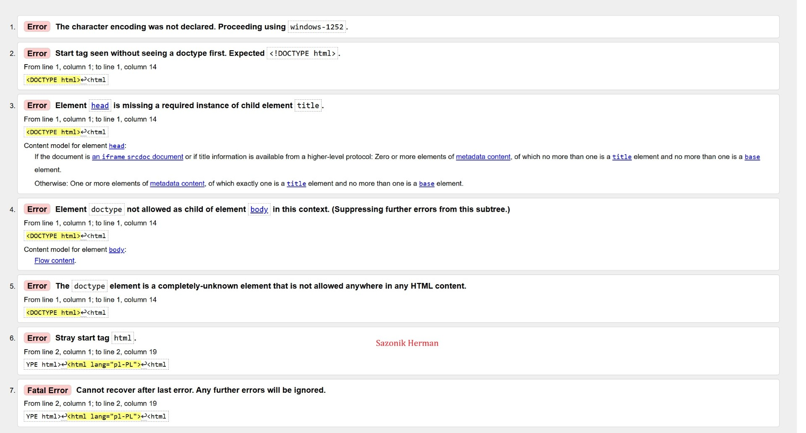
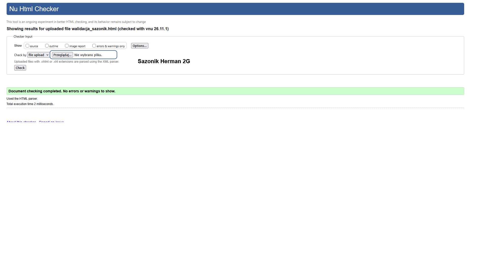

Walidacja polega na sprawdzeniu zgodności dokumentu HTML ze standardami. Walidator analizuje kod i wskazuje błędy oraz ostrzeżenia.
Sprawdź w W3C HTML Validator każdy plik: index.html, poczta_sazonik.html, plik_sazonik.html, tabela_sazonik.html i formularz_sazonik.html.

